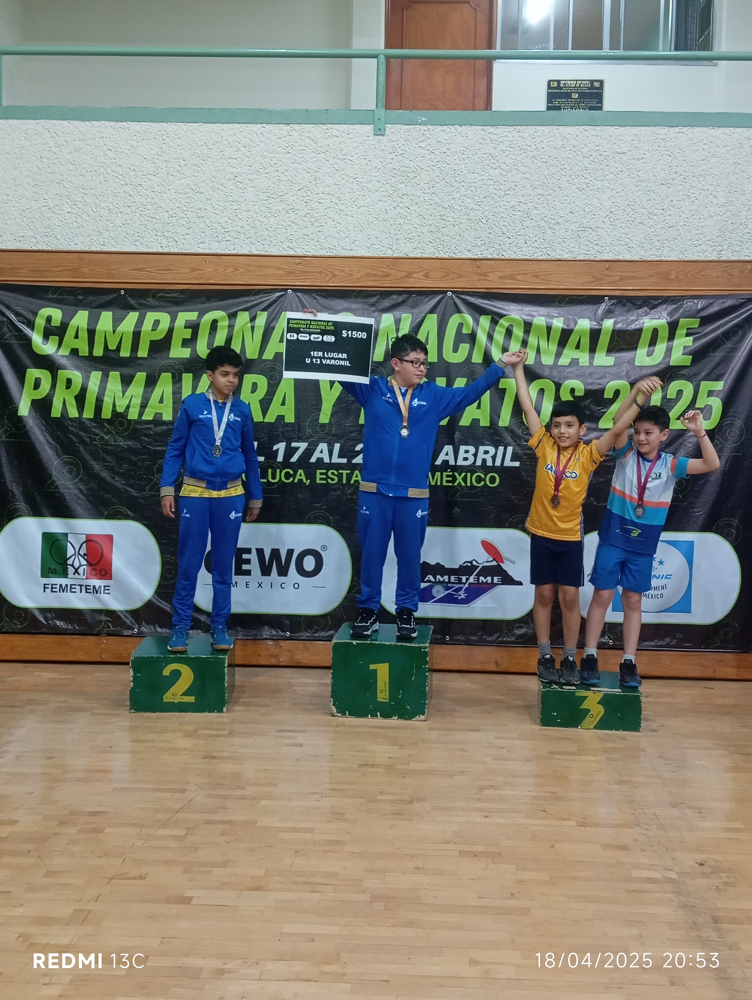
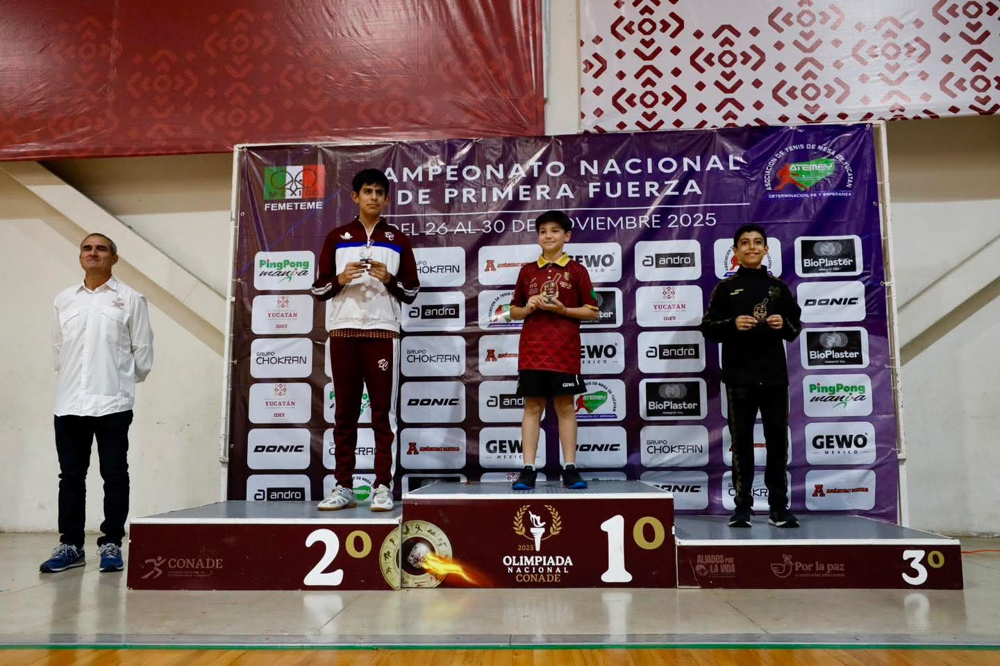
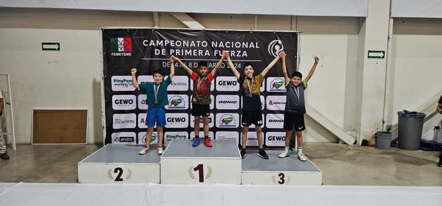
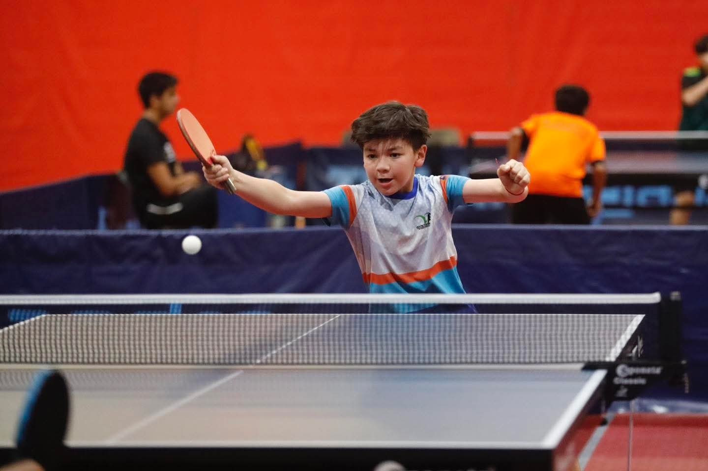
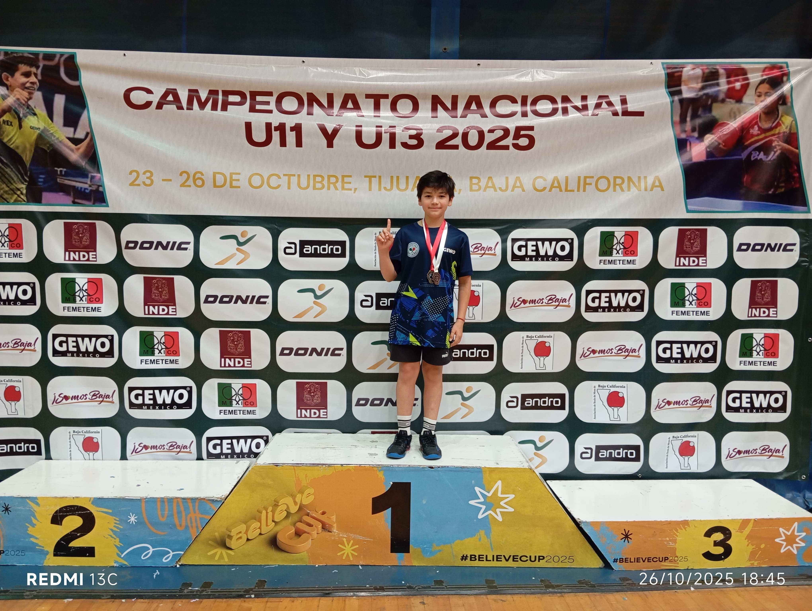

Registro Fotográfico y Multimedia
Galería de Eventos
Selecciona una categoría para explorar las fotos y videos de la trayectoria de Gus.








Levi Báez Mora Entrenador Estatal
"A seguir manteniendo esa intensidad en la mesa, Gus. El esfuerzo diario en el Velódromo rinde frutos a nivel internacional."
Club Coatepong Coatepec
"¡Mucho éxito Gus! Toda la comunidad de Coatepec está muy orgullosa de ver tu crecimiento continuo."